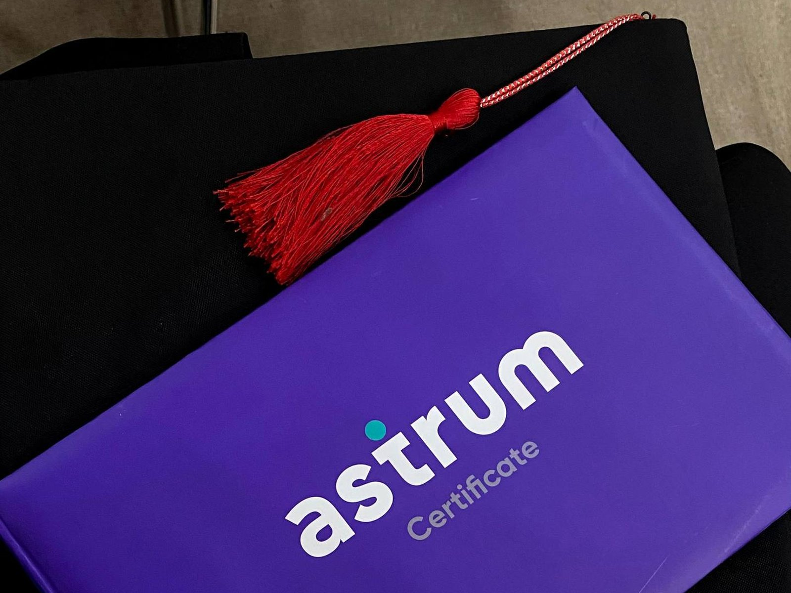
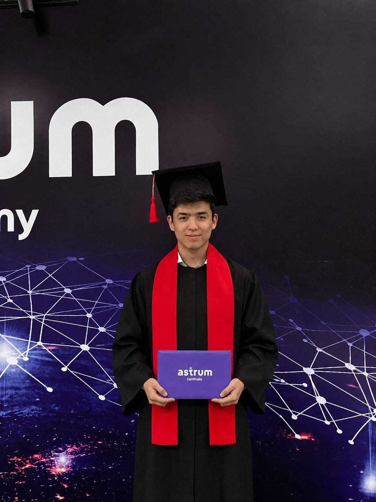

Graduating from Astrum IT Academy

I graduated from Astrum IT Academy on 9 September 2023. It was a year on the Software Engineering track, which runs together with the Qwasar Silicon Valley programme.
How Qwasar works
There are no lectures. They give you a project and a deadline, and the rest is you and the people sitting next to you. The first months were mostly C: memory, pointers and a lot of staring at crashes. I finished the C track faster than anyone at the academy ever had, and it's still the thing I'm proudest of from that year.

What happened next
After the ceremony I stayed on at Astrum, this time as a backend mentor. Explaining something to a person who is stuck turned out to be the quickest way to find out whether I understood it myself, and that's how teaching became a regular part of my work.